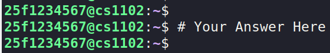
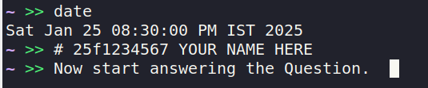

Instructions for Online Lab
A Google Doc will be shared with you via email 1-2 days before Lab 1 starts
This single Google Document will be used for all five labs during the Jan 2025 term
You are required to answer each question with a screenshot and/or text answer, as per the question’s requirements
Check your student email inbox for an email with the subject:
Jan 2025 CS1102 Lab Report - <your_roll_no>
How to do lab questions in the VM?
Complete each question only after logging into the course VM and following the format below while taking screenshots:
If the question requires you to complete the task on your local PC, then follow the below format:
- Execute the
datecommand (e.g.,Sat Jan 25 01:22:00 AM IST 2025).
- Execute the
- Add a comment on the next line:
# Roll_no Name
(e.g.,25f1234567 YOUR NAME HERE)

- Add a comment on the next line:
If any questions require working with files, they can be found in
/opt/lab-assets
- The command prompt from the CS1102 course VM must be visible in the solution screenshot for every question
- If there is no prompt, you will receive zero marks in that lab
How to write a Lab Report in Google Doc?
In the Google Doc, create a new tab for each lab (Example: If you doing the Lab-1, create a tab named
Lab-1)Create outlines for each questions (Example: Create a outline named
Question 1if you are solving that question 1) in each tab, to navigate the questions easily. Check here to know about how to create a outlines in the documentStick to the question sequence as given in the problem statement while answering the lab
Ensure that the screenshots are clear and that the text is readable. Screenshots containing very small or blurred images will be rejected
A lab report must include the questions along with their corresponding answer screenshots
Align your document well and maintain the consistent font size and font style throughout the document. Preferably,
- Font size - 11 (normal text) and 14 (heading)
- Font style - Open Sans (medium)
Check the lab document template here
- If your doc/report does not follow format above, it will not be evaluated
- Feel free to use document comments to communicate with your lab TA.
- Once you complete the lab work for a particular lab, tag your TA in your lab report and let him/her know.
- Your TA’s will also give feedback on the questions using the comments in the google doc.
Action on Malpractices/Plagiarism
If you engage in malpractice or plagiarism, the following actions will be taken:
- You will be required to repeat the entire lab in the next term.
- A remark regarding malpractice will be added to your degree.
Malpractices include (but are not limited to):
- Using other student’s answer screenshot
- Using or sharing answers with another person.